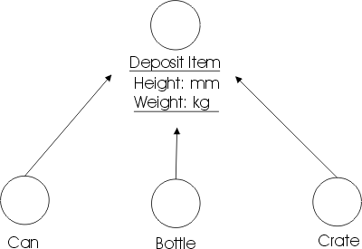
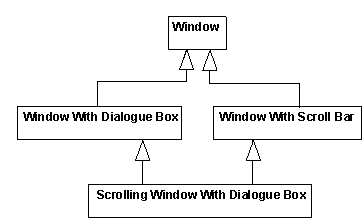
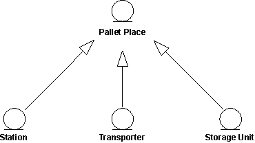
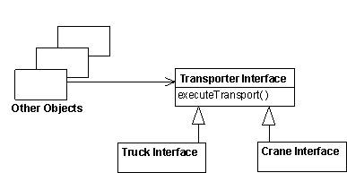
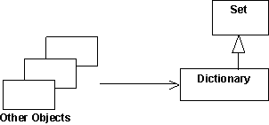
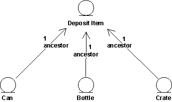

| Guideline: Generalization |
 |
|
| Related Elements |
|---|
GeneralizationMany things in real life have common properties. Both dogs and cats are animals, for example. Objects can have common properties as well, which you can clarify using a generalization between their classes. By extracting common properties into classes of their own, you will be able to change and maintain the system more easily in the future. A generalization shows that one class inherits from another. The inheriting class is called a descendant. The class inherited from is called the ancestor. Inheritance means that the definition of the ancestor - including any properties such as attributes, relationships, or operations on its objects - is also valid for objects of the descendant. The generalization is drawn from the descendant class to its ancestor class. Generalization can take place in several stages, which lets you model complex, multilevel inheritance hierarchies. General properties are placed in the upper part of the inheritance hierarchy, and special properties lower down. In other words, you can use generalization to model specializations of a more general concept. Example In the Recycling Machine System all the classes - Can, Bottle, and Crate - describe different types of deposit items. They have two common properties, besides being of the same type: each has a height and a weight. You can model these properties through attributes and operations in a separate class, Deposit Item. Can, Bottle, and Crate will inherit the properties of this class.
 The classes Can, Bottle, and Crate have common properties height and weight. Each is a specialization of the general concept Deposit Item. Multiple InheritanceA class can inherit from several other classes through multiple inheritance, although generally it will inherit from only one. There are a couple of potential problems you must be aware of if you use multiple inheritance:
 Multiple and repeated inheritance. The Scrolling Window With Dialog Box class is inheriting the Window class more than once. A question that might arise in this context is "How many copies of the attributes of Window are included in instances of Scrolling Window With Dialog Box?" So, if you are using repeated inheritance, you must have a clear definition of its semantics; in most cases this is defined by the programming language supporting the multiple inheritance. In general, the programming language rules governing multiple inheritance are complex, and often difficult to use correctly. Therefore using multiple inheritance only when needed, and always with caution is recommended. Abstract and Concrete ClassesA class that is not instantiated and exists only for other classes to inherit it, is an abstract class. Classes that are actually instantiated are concrete classes. Note that an abstract class must have at least one descendant to be useful. Example A Pallet Place in the Depot-Handling System is an abstract entity class that represents properties common to different types of pallet places. The class is inherited by the concrete classes Station, Transporter, and Storage Unit, all of which can act as pallet places in the depot. All these objects have one common property: they can hold one or more Pallets.
 The inherited class, here Pallet Place, is abstract and not instantiated on its own. UseBecause class stereotypes have different purposes, inheritance from one class stereotype to another does not make sense. Letting a boundary class inherit an entity class, for example, would make the boundary class into some kind of hybrid. Therefore, you should use generalizations only between classes of the same stereotype. You can use generalization to express two relationships between classes:
You can create relationships such as these by breaking out properties common to several classes and placing them in a separate classes that the others inherit; or by creating new classes that specialize more general ones and letting them inherit from the general classes. If the two variants coincide, you should have no difficulty setting up the right inheritance between classes. In some cases, however, they do not coincide, and you must take care to keep the use of inheritance understandable. At the very least you should know the purpose of each inheritance relationship in the model. Inheritance to Support PolymorphismSubtyping means that the descendant is a subtype that can fill in for all its ancestors in any situation. Subtyping is a special case of polymorphism, and is an important property because it lets you design all the clients (objects that use the ancestor) without taking the ancestor's potential descendants into consideration. This makes the client objects more general and reusable. When the client uses the actual object, it will work in a specific way, and it will always find that the object does its task. Subtyping ensures that the system will tolerate changes in the set of subtypes. Example In a Depot-Handling System, the Transporter Interface class defines basic functionality for communication with all types of transport equipment, such as cranes and trucks. The class defines the operation executeTransport, among other things.
 Both the Truck Interface and Crane Interface classes inherit from the Transporter Interface; that is, objects of both classes will respond to the message executeTransport. The objects may stand in for Transporter Interface at any time and will offer all its behavior. Thus, other objects (client objects) can send a message to a Transporter Interface object, without knowing if a Truck Interface or Crane Interface object will respond to the message. The Transporter Interface class can even be abstract, never instantiated on its own. In which case, the Transporter Interface might define only the signature of the executeTransport operation, whereas the descendant classes implement it. Some object-oriented languages, such as C++, use the class hierarchy as a type hierarchy, forcing the designer to use inheritance to subtype in the design model. Others, such as Smalltalk-80, have no type checking at compilation time. If the objects cannot respond to a received message they will generate an error message. It may be a good idea to use generalization to indicate subtype relationships even in languages without type checking. In some cases, you should use generalization to make the object model and source code easier to understand and maintain, regardless of whether the language allows it. Whether or not this use of inheritance is good style depends heavily on the conventions of the programming language. Inheritance to Support Implementation ReuseSubclassing constitutes the reuse aspect of generalization. When subclassing, you consider what parts of an implementation you can reuse by inheriting properties defined by other classes. Subclassing saves labor and lets you reuse code when implementing a particular class. Example In the Smalltalk-80 class library, the class Dictionary inherits properties from Set.
 The reason for this generalization is that Dictionary can then reuse some general methods and storage strategies from the implementation of Set. Even though a Dictionary can be seen as a Set (containing key-value pairs), Dictionary is not a subtype of Set because you cannot add just any kind of object to a Dictionary (only key-value pairs). Objects that use Dictionary are not aware that it actually is a Set. Subclassing often leads to illogical inheritance hierarchies that are difficult to understand and to maintain. Therefore, it is not recommended that you use inheritance only for reuse, unless something else is recommended in using your programming language. Maintenance of this kind of reuse is usually quite tricky. Any change in the class Set can imply large changes of all classes inheriting the class Set. Be aware of this and inherit only stable classes. Inheritance will actually freeze the implementation of the class Set, because changes to it are too expensive. Inheritance in Programming LanguagesThe use of generalization relationships in design should depend heavily on the semantics and proposed use of inheritance in the programming language. Object-oriented languages support inheritance between classes, but nonobject-oriented languages do not. You should handle language characteristics in the design model. If you are using a language that does not support inheritance, or multiple inheritance, you must simulate inheritance in the implementation. In which case, it is better to model the simulation in the design model and not use generalizations to describe inheritance structures. Modeling inheritance structures with generalizations, and then simulating inheritance in the implementation, can ruin the design. If you are using a language that does not support inheritance, or multiple inheritance, you must simulate inheritance in the implementation. In this case, it is best to model the simulation in the design model and not use generalizations to describe inheritance structures. Modeling inheritance structures with generalizations, and then only simulating inheritance in the implementation can ruin the design. You will probably have to change the interfaces and other object properties during simulation. It is recommended that you simulate inheritance in one of the following ways:
Example In this example the descendants forward messages to the ancestor via links that are instances of associations.
 Behavior common to Can, Bottle, and Crate objects is assigned to a special class. Objects for which this behavior is common send a message to a Deposit Item object to perform the behavior when necessary. |
© Copyright IBM Corp. 1987, 2006. All Rights Reserved. |